|
Bryan Russell
Lead, Video Understanding Group Senior Research Scientist Adobe Research Mailing address: 601 Townsend Street, San Francisco, CA 94103 E-mail: brussell at adobe.com 
|

|
Internships: I recruit enthusiastic and talented Ph.D., master's, and advanced undergraduate students in computer science for summer internships at Adobe in San Francisco. Applications are reviewed between November and February. Please note that intern positions are limited and highly competitive. To apply, email me your CV and a brief description of your desired internship project.
Research: My current research focuses on developing models and algorithms that enable video search, editing, and understanding for generative AI. This multidisciplinary work encompass computer vision, machine learning, computer graphics, and audio research.
Bio: I received my Ph.D. from MIT in the Computer Science and Artificial Intelligence Laboratory under the supervision of Professors Bill Freeman and Antonio Torralba. I was a post-doctoral fellow in the INRIA Willow team at the Département d'Informatique of Ecole Normale Supérieure. Before joining Adobe, I was a Research Scientist with Intel Labs as part of the Intel Science and Technology Center for Visual Computing (ISTC-VC) and Affiliate Faculty at the University of Washington. (Talk bio)
Professional activities:
- Area chair: CVPR 2016, 3DV 2016, ECCV 2018, CVPR 2019, CVPR 2020, ECCV 2020, CVPR 2023, NeurIPS 2023, ECCV 2024, CVPR 2025, CVPR 2026.
- DEI chair: ECCV 2022.
Tech transfers:
- Media Intelligence (visual search) in Adobe Premiere Pro (Adobe announcement)
- Camera controls in the Adobe Firefly Video Model (Adobe blog post)
- Video shot size and angle filter in Adobe Stock (Adobe MAX 2021 announcement)
- Video smart tags in Adobe Experience Manager (feature description and release notes)
- Video auto-tagging in Adobe Experience Manager UGC (blog post)
- Auto-ground plane in Adobe Dimension (blog post)
- Automatic portrait segmentation in Adobe Photoshop Mix mobile app's "auto cut out" feature (demo video)
Selected projects (complete list of publications):
| 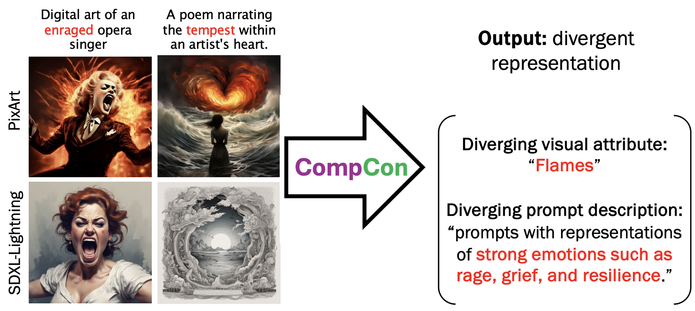 |
Discovering Divergent Representations between Text-to-Image Models
Lisa Dunlap, Joseph E. Gonzalez, Trevor Darrell, Fabian Caba Heilbron, Josef Sivic, Bryan Russell International Conference on Computer Vision (ICCV), 2025. |
| 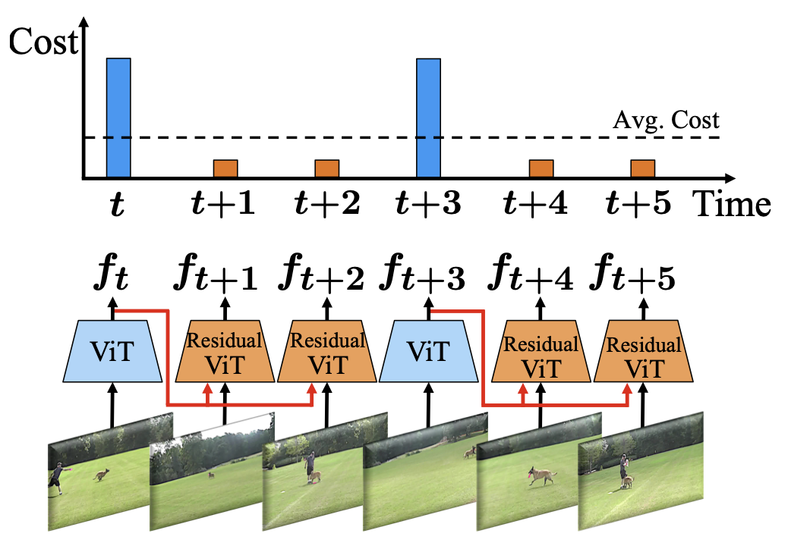 |
ResidualViT for Efficient Temporally Dense Video Encoding
Mattia Soldan, Fabian Caba Heilbron, Bernard Ghanem, Josef Sivic, Bryan Russell International Conference on Computer Vision (ICCV), 2025. |
| 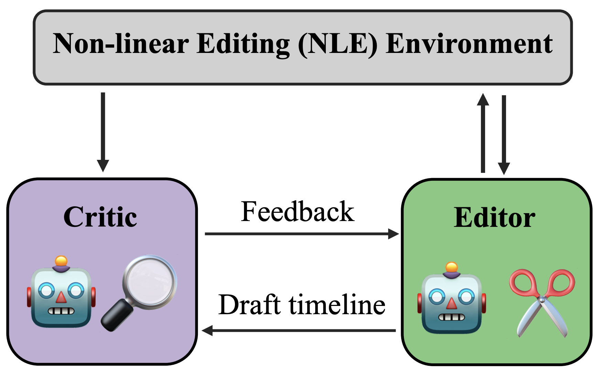 |
EditDuet: A Multi-Agent System for Video Non-Linear Editing
Marcelo Sandoval-Castañeda, Bryan Russell, Josef Sivic, Gregory Shakhnarovich, Fabian Caba Heilbron SIGGRAPH, 2025. |
| 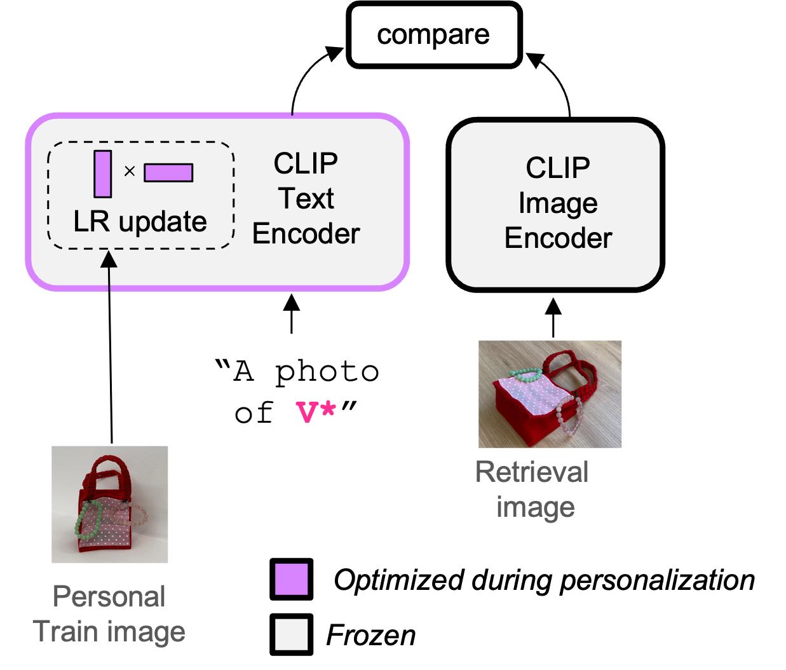 |
Improving Personalized Search with Regularized Low-Rank Parameter Updates
Fiona Ryan, Josef Sivic, Fabian Caba Heilbron, Judy Hoffman, James M. Rehg, Bryan Russell Conference on Computer Vision and Pattern Recognition (CVPR), 2025. |
| 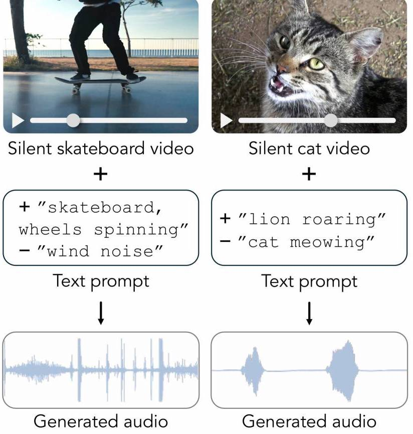 |
Video-Guided Foley Sound Generation with Multimodal Controls
Ziyang Chen, Prem Seetharaman, Bryan Russell, Oriol Nieto, David Bourgin, Andrew Owens, Justin Salamon Conference on Computer Vision and Pattern Recognition (CVPR), 2025. |
|
NewMove: Customizing Text-to-Video Models with Novel Motions
Joanna Materzyńska, Josef Sivic, Eli Shechtman, Antonio Torralba, Richard Zhang, Bryan Russell Asian Conference on Computer Vision (ACCV), 2024. |
|
| 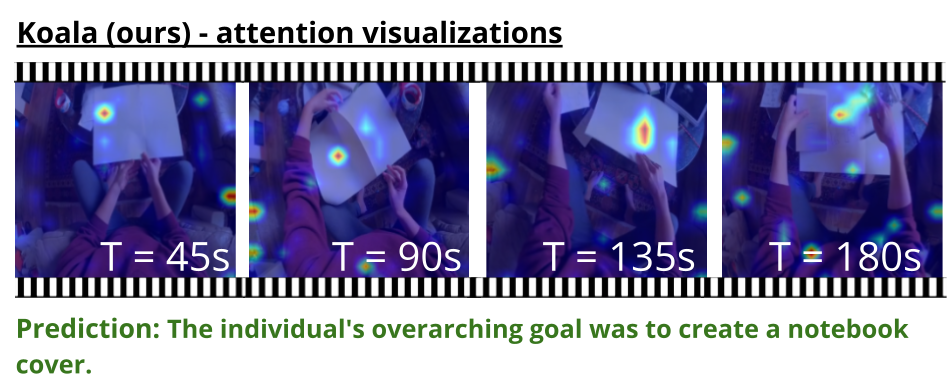 |
Koala: Keyframe-Conditioned Long Video-LLM
Reuben Tan, Ximeng Sun, Ping Hu, Jui-hsien Wang, Hanieh Deilamsalehy, Bryan A. Plummer, Bryan Russell, Kate Saenko Conference on Computer Vision and Pattern Recognition (CVPR), 2024. |
| 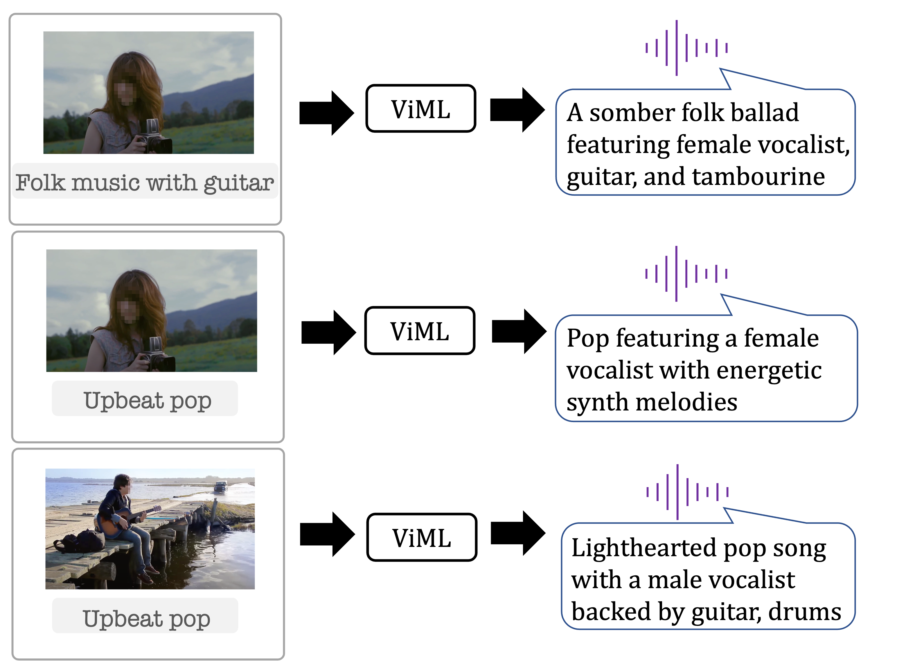 |
Language-Guided Music Recommendation for Video via Prompt Analogies
Daniel McKee, Justin Salamon, Josef Sivic, Bryan Russell Conference on Computer Vision and Pattern Recognition (CVPR), 2023. |
| 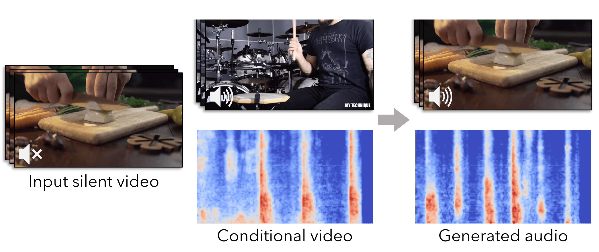 |
Conditional Generation of Audio from Video via Foley Analogies
Yuexi Du, Ziyang Chen, Justin Salamon, Bryan Russell, Andrew Owens Conference on Computer Vision and Pattern Recognition (CVPR), 2023. |
| 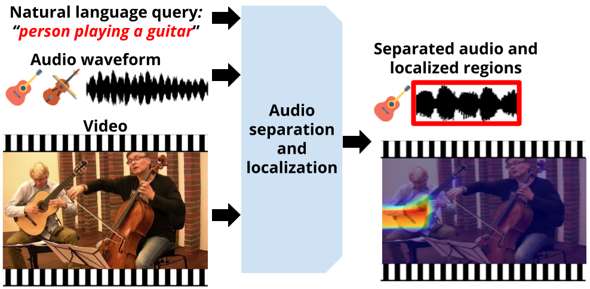 |
Language-Guided Audio-Visual Source Separation via Trimodal Consistency
Reuben Tan, Arijit Ray, Andrea Burns, Bryan A. Plummer, Justin Salamon, Oriol Nieto, Bryan Russell, Kate Saenko Conference on Computer Vision and Pattern Recognition (CVPR), 2023. |
| 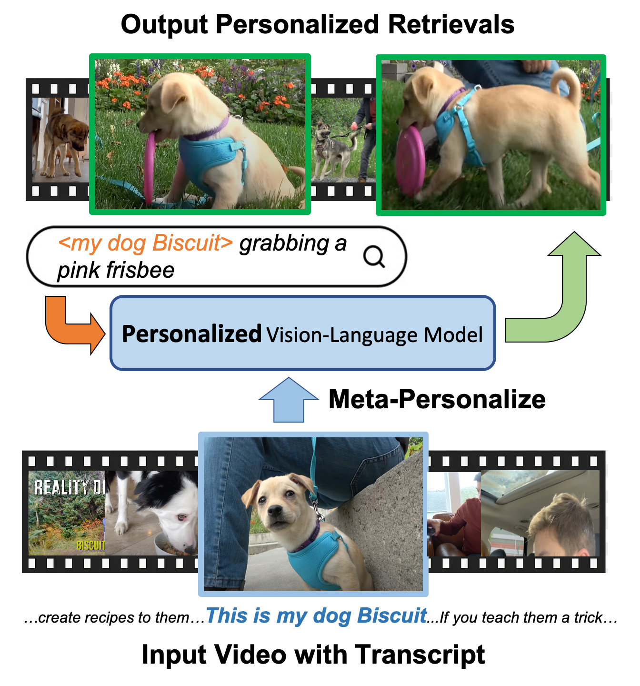 |
Meta-Personalizing Vision-Language Models to Find Named Instances in Video
Chun-Hsiao Yeh, Bryan Russell, Josef Sivic, Fabian Caba Heilbron, Simon Jenni Conference on Computer Vision and Pattern Recognition (CVPR), 2023. |
|
Monocular Dynamic View Synthesis: A Reality Check
Hang Gao, Ruilong Li, Shubham Tulsiani, Bryan Russell, Angjoo Kanazawa Advances in Neural Information Processing Systems (NeurIPS), 2022. |
|
| 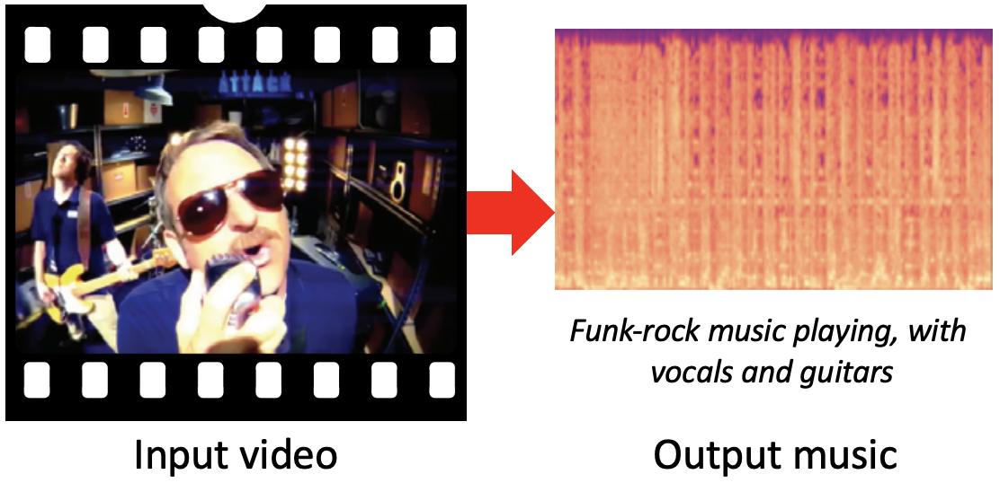 |
It's Time for Artistic Correspondence in Music and Video
Dídac Surís, Carl Vondrick, Bryan Russell, Justin Salamon Conference on Computer Vision and Pattern Recognition (CVPR), 2022. |
| 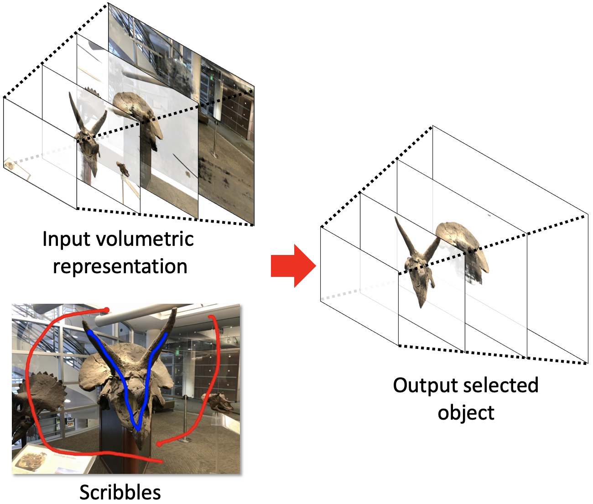 |
Neural Volumetric Object Selection
Zhongzheng Ren, Aseem Agarwala, Bryan Russell, Alexander G. Schwing, Oliver Wang Conference on Computer Vision and Pattern Recognition (CVPR), 2022. |
| 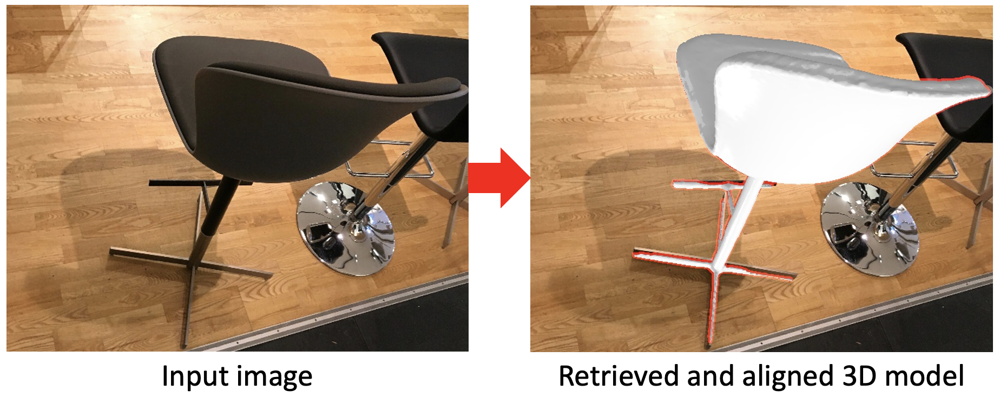 |
Focal Length and Object Pose Estimation via Render and Compare
Georgy Ponimatkin, Yann Labbé, Bryan Russell, Mathieu Aubry, Josef Sivic Conference on Computer Vision and Pattern Recognition (CVPR), 2022. |
| 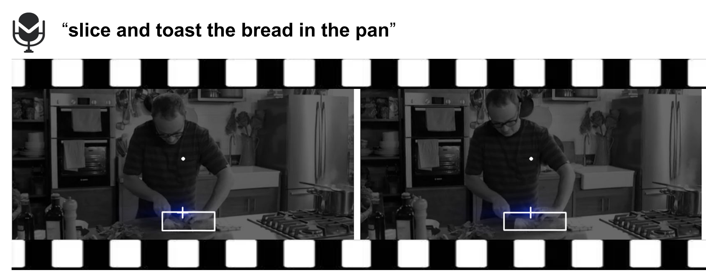 |
Look at What I'm Doing: Self-Supervised Spatial Grounding of Narrations in Instructional Videos
Reuben Tan, Bryan A. Plummer, Kate Saenko, Hailin Jin, Bryan Russell Advances in Neural Information Processing Systems (NeurIPS), 2021. |
| 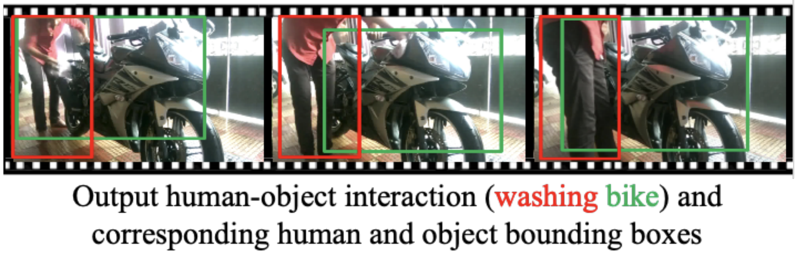 |
Weakly Supervised Human-Object Interaction Detection in Video via Contrastive Spatiotemporal Regions
Shuang Li, Yilun Du, Antonio Torralba, Josef Sivic, Bryan Russell International Conference on Computer Vision (ICCV), 2021. |
| 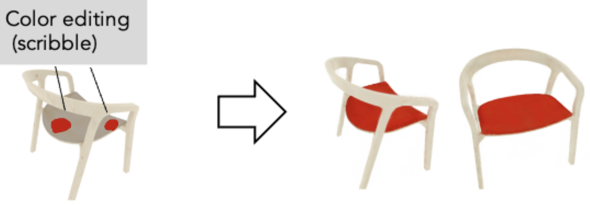 |
Editing Conditional Radiance Fields
Steven Liu, Xiuming Zhang, Zhoutong Zhang, Richard Zhang, Jun-Yan Zhu, Bryan Russell International Conference on Computer Vision (ICCV), 2021. |
| 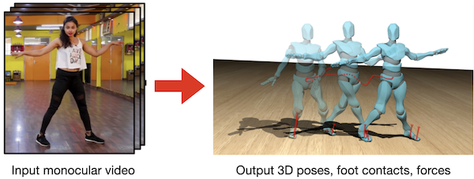 |
Contact and Human Dynamics from Monocular Video
Davis Rempe, Leonidas J. Guibas, Aaron Hertzmann, Bryan Russell, Ruben Villegas, Jimei Yang European Conference on Computer Vision (ECCV), 2020. |
| 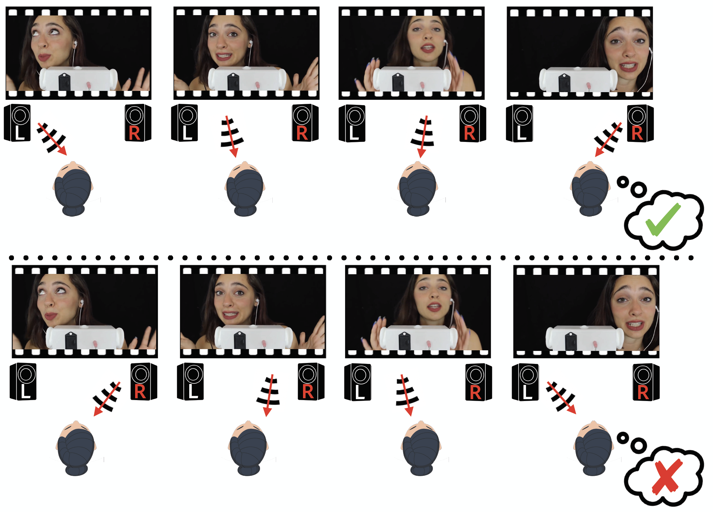 |
Telling Left from Right: Learning Spatial Correspondence of Sight and Sound
Karren Yang, Bryan Russell, Justin Salamon Conference on Computer Vision and Pattern Recognition (CVPR), 2020. Adobe blog |
| 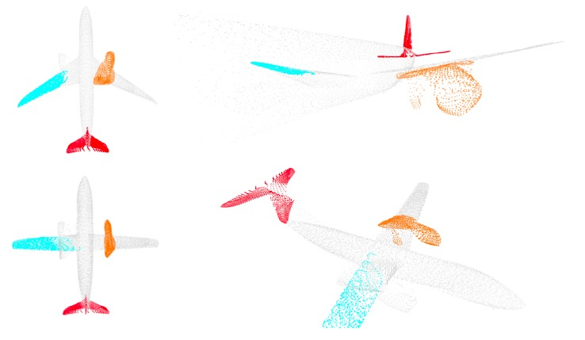 |
Learning Elementary Structures for 3D Shape Generation and Matching
Theo Deprelle, Thibault Groueix, Matthew Fisher, Vladimir G. Kim, Bryan Russell, Mathieu Aubry Advances in Neural Information Processing Systems (NeurIPS), 2019. |
| 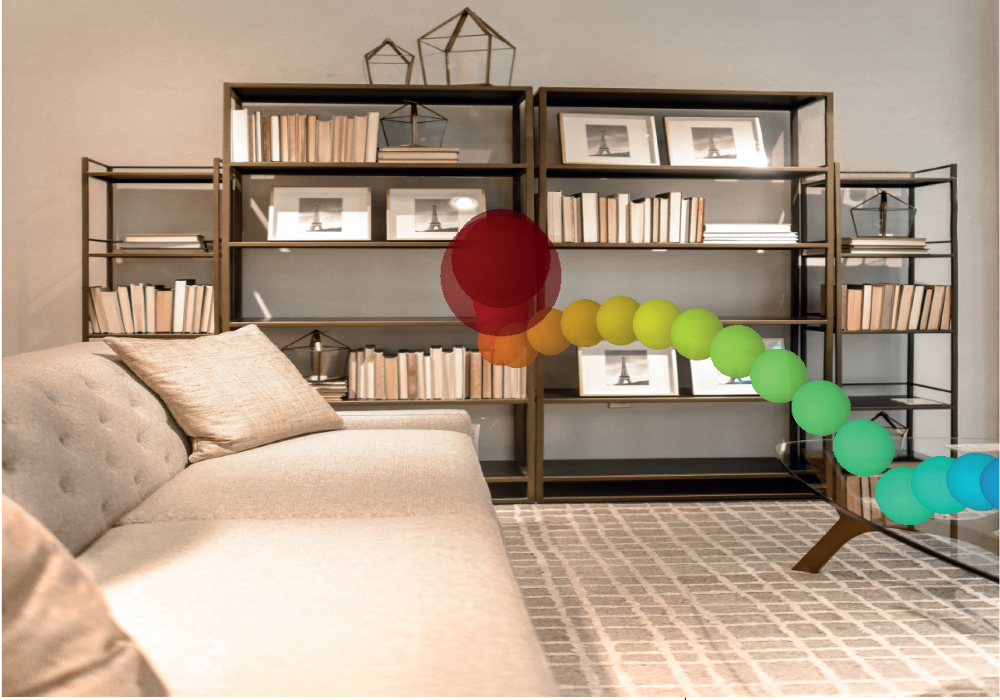 |
Neural Re-Simulation for Generating Bounces in Single Images
Carlo Innamorati, Bryan Russell, Danny M. Kaufman, Niloy J. Mitra International Conference on Computer Vision (ICCV), 2019. |
| 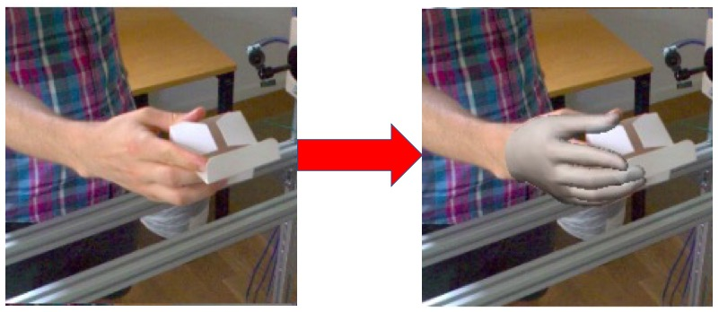 |
FreiHAND: A Dataset for Markerless Capture of Hand Pose and Shape from Single RGB Images
Christian Zimmermann, Duygu Ceylan, Jimei Yang, Bryan Russell, Max Argus, Thomas Brox International Conference on Computer Vision (ICCV), 2019. |
| 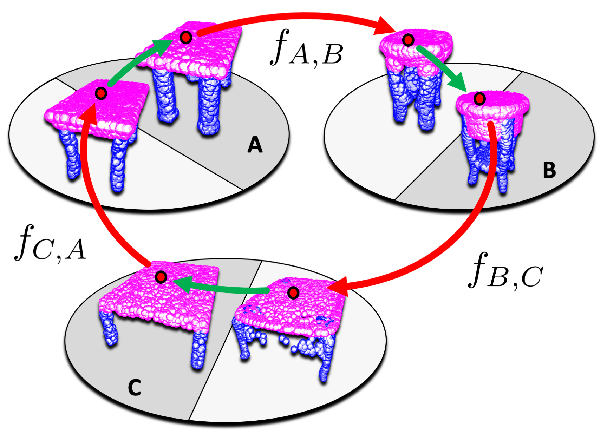 |
Unsupervised Cycle-Consistent Deformation for Shape Matching
Thibault Groueix, Matthew Fisher, Vladimir G. Kim, Bryan Russell, Mathieu Aubry Symposium on Geometry Processing (SGP), 2019. |
| 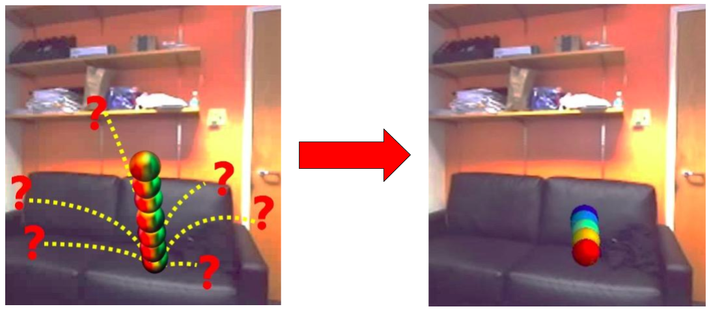 |
Bounce and Learn: Modeling Scene Dynamics with Real-World Bounces
Senthil Purushwalkam, Abhinav Gupta, Danny Kaufman, Bryan Russell International Conference on Learning Representations (ICLR), 2019. Adobe blog |
| 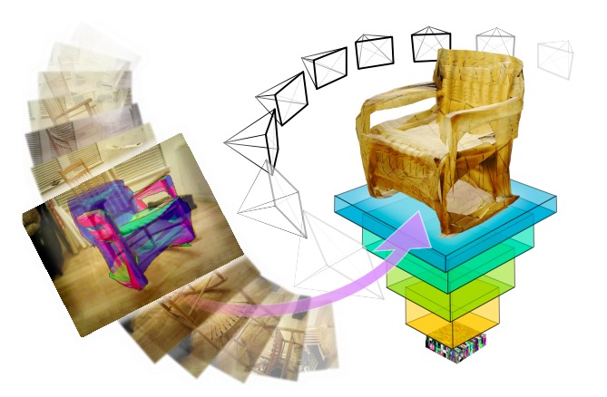 |
Photometric Mesh Optimization for Video-Aligned 3D Object Reconstruction
Chen-Hsuan Lin, Oliver Wang, Bryan Russell, Eli Shechtman, Vladimir G. Kim, Matthew Fisher, Simon Lucey Conference on Computer Vision and Pattern Recognition (CVPR), 2019. |
| 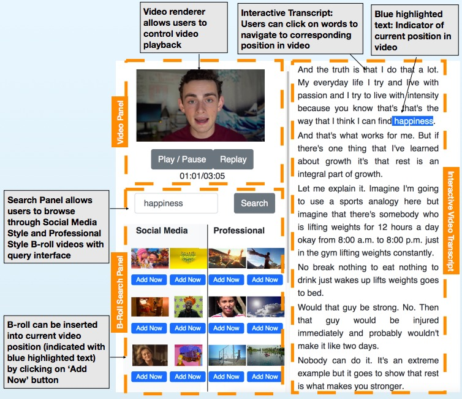 |
B-Script: Transcript-based B-roll Video Editing with Recommendations
Bernd Huber, Hijung Valentina Shin, Bryan Russell, Oliver Wang, Gautham J. Mysore ACM Conference on Human Factors in Computing Systems (CHI), 2019. Adobe blog |
| 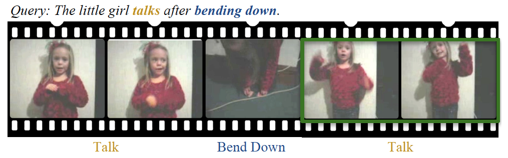 |
Localizing Moments in Video with Temporal Language
Lisa Anne Hendricks, Oliver Wang, Eli Shechtman, Josef Sivic, Trevor Darrell, Bryan Russell Conference on Empirical Methods in Natural Language Processing (EMNLP), 2018. |
| 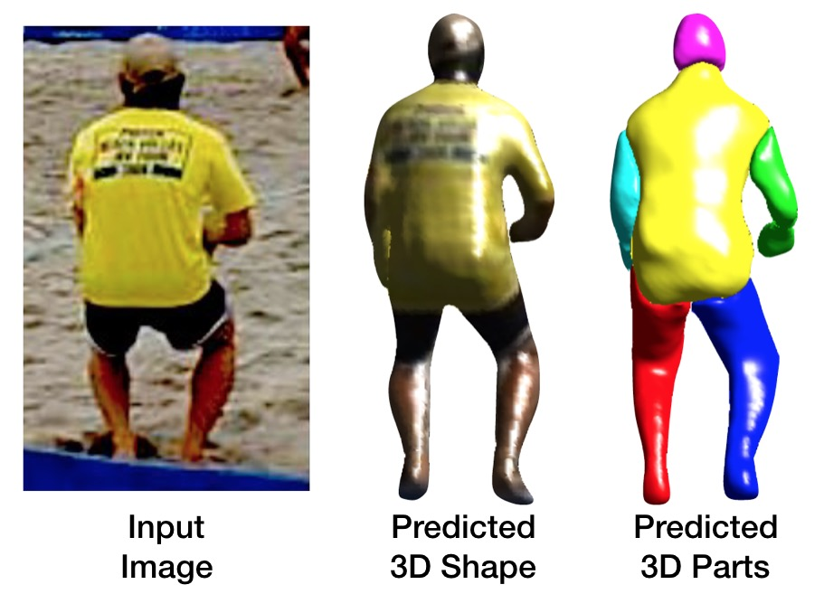 |
BodyNet: Volumetric Inference of 3D Human Body Shapes
Gül Varol, Duygu Ceylan, Bryan Russell, Jimei Yang, Ersin Yumer, Ivan Laptev, Cordelia Schmid European Conference on Computer Vision (ECCV), 2018. |
| 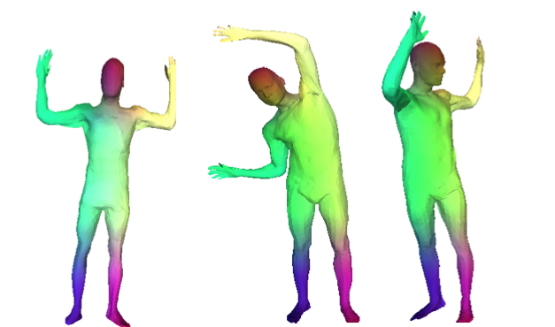 |
3D-CODED: 3D Correspondences by Deep Deformation
Thibault Groueix, Matthew Fisher, Vladimir G. Kim, Bryan Russell, Mathieu Aubry European Conference on Computer Vision (ECCV), 2018. |
| 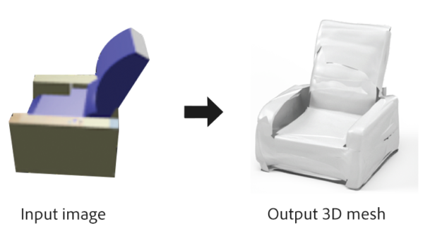 |
AtlasNet: A Papier-Mâché Approach to Learning 3D Surface Generation
Thibault Groueix, Matthew Fisher, Vladimir G. Kim, Bryan Russell, Mathieu Aubry Conference on Computer Vision and Pattern Recognition (CVPR), 2018. Adobe blog |
|
|
Transferring Image-Based Edits for Multi-Channel Compositing
James W. Hennessey, Wilmot Li, Bryan Russell, Eli Shechtman, Niloy J. Mitra ACM Transactions on Graphics (SIGGRAPH Asia), 2017. |
 |
Localizing Moments in Video with Natural Language
Lisa Anne Hendricks, Oliver Wang, Eli Shechtman, Josef Sivic, Trevor Darrell, Bryan Russell International Conference on Computer Vision (ICCV), 2017. Adobe blog |
 |
Learning Visual Importance for Graphic Designs and Data Visualizations
Zoya Bylinskii, Nam Wook Kim, Peter O'Donovan, Sami Alsheikh, Spandan Madan, Hanspeter Pfister, Fredo Durand, Bryan Russell, Aaron Hertzmann UIST, 2017. Best paper honorable mention |
 |
ActionVLAD: Learning Spatio-temporal Aggregation for Action Classification
Rohit Girdhar, Deva Ramanan, Abhinav Gupta, Josef Sivic, Bryan Russell Conference on Computer Vision and Pattern Recognition (CVPR), 2017. |
|
|
PixelNet: Representation of the Pixels, by the Pixels, and for the Pixels
Aayush Bansal, Xinlei Chen, Bryan Russell, Abhinav Gupta, Deva Ramanan arXiv, 2017. |
 |
Marr Revisited: 2D-3D Alignment via Surface Normal Prediction
Aayush Bansal, Bryan C. Russell, Abhinav Gupta Conference on Computer Vision and Pattern Recognition (CVPR), 2016. |
 |
Deep Exemplar 2D-3D Detection by Adapting from Real to Rendered Views
Francisco Massa, Bryan C. Russell, Mathieu Aubry Conference on Computer Vision and Pattern Recognition (CVPR), 2016. |
 |
Understanding Deep Features with Computer-Generated Imagery
Mathieu Aubry and Bryan C. Russell IEEE International Conference on Computer Vision (ICCV), 2015. |
 |
Deep Classifiers from Image Tags in the Wild
Hamid Izadinia, Bryan C. Russell, Ali Farhadi, Matthew D. Hoffman, Aaron Hertzmann Multimedia COMMONS, ACM Multimedia, 2015. |
 |
The 3D Jigsaw Puzzle: Mapping Large Indoor Spaces
Ricardo Martin-Brualla, Yanling He, Bryan C. Russell, Steven M. Seitz European Conference on Computer Vision (ECCV), 2014. |
 |
Seeing 3D Chairs: Exemplar Part-based 2D-3D Alignment Using a Large Dataset of CAD Models
Mathieu Aubry, Daniel Maturana, Alexei A. Efros, Bryan C. Russell, Josef Sivic IEEE Conference on Computer Vision and Pattern Recognition (CVPR), 2014. |
 |
Painting-to-3D Model Alignment Via Discriminative Visual Elements
Mathieu Aubry, Bryan C. Russell, Josef Sivic ACM Transactions on Graphics (presented at SIGGRAPH 2014), Vol. 33, No. 2, 2014. |
 |
3D Wikipedia: Using Online Text to Automatically Label and Navigate Reconstructed Geometry
Bryan C. Russell, Ricardo Martin-Brualla, Daniel J. Butler, Steven M. Seitz, Luke Zettlemoyer ACM Transactions on Graphics (SIGGRAPH Asia), Vol. 32, No. 6, 2013. |
 |
Localizing 3D Cuboids in Single-view Images
Jianxiong Xiao, Bryan C. Russell, Antonio Torralba Advances in Neural Information Processing Systems (NIPS), 2012. |
 |
Automatic Alignment of Paintings and Photographs Depicting a 3D Scene
Bryan C. Russell, Josef Sivic, Jean Ponce, Hélène Dessales 3rd International IEEE Workshop on 3D Representation for Recognition (3dRR-11), associated with ICCV 2011. |
 |
Segmenting Scenes by Matching Image Composites
Bryan C. Russell, Alexei A. Efros, Josef Sivic, William T. Freeman, Andrew Zisserman Advances in Neural Information Processing Systems (NIPS), 2009. |
 |
LabelMe video: Building a Video Database with Human Annotations
Jenny Yuen, Bryan C. Russell, Ce Liu, Antonio Torralba IEEE International Conference on Computer Vision (ICCV), 2009. |
 |
LabelMe3D: Building a Database of 3D Scenes from User Annotations
Bryan C. Russell and Antonio Torralba IEEE Conference on Computer Vision and Pattern Recognition (CVPR), 2009. |
 |
LabelMe: A Database and Web-based Tool for Image Annotation
Bryan C. Russell, Antonio Torralba, Kevin P. Murphy, William T. Freeman International Journal of Computer Vision, 77(1-3):157-173, 2008. |
 |
Object Recognition by Scene Alignment
Bryan C. Russell, Antonio Torralba, Ce Liu, Rob Fergus, William T. Freeman Advances in Neural Information Processing Systems (NIPS), 2007. |
 |
Using Multiple Segmentations to Discover Objects and their Extent in Image Collections
Bryan C. Russell, Alexei A. Efros, Josef Sivic, William T. Freeman, Andrew Zisserman IEEE Conference on Computer Vision and Pattern Recognition (CVPR), 2006. |
 |
Discovering Objects and their Location in Images
Josef Sivic, Bryan C. Russell, Alexei A. Efros, Andrew Zisserman, William T. Freeman International Conference on Computer Vision (ICCV), 2005. Winner of the Helmholtz "test-of-time" Prize at ICCV 2017 |
- CVPR 2013: Intel-sponsored panel discussion on computational bottlenecks in computer vision
- Spring 2012: CSE 590V: Computer vision seminar
- Fall 2011: CSE 590V: Computer vision seminar